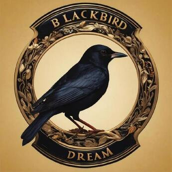

Théodor Lemerle
PhD Student @ IRCAM, team Analyse/Synthèse.
My goal is to build expressive text-to-speech model that could convincingly tell a story to a kid.
Before that I studied acoustic, signal processing and computer science for music (ATIAM) at IRCAM. I also studied mathematics and computer science at Sorbonne Université (M2A).
My supervisors are Axel Roebel and Nicolas Obin.
I'm interested in
Text-to-speech, deep learning, audio signal processing, generative modeling ...
Contact
Mail : lastname at ircam dot fr
GitHub : @theodorblackbird